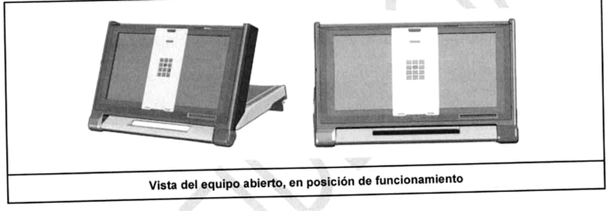
Resumen ejecutivo
[Deduced] A partir de la arquitectura documentada, la máquina de votación puede describirse técnicamente como un computador embebido de propósito específico: integra una unidad x86 en formato Qseven/System on Module, un microcontrolador ARM dedicado al control de periféricos, una pantalla de gran formato con interfaz táctil, un sistema de impresión térmica directa, radiofrecuencia RFID, audio, sensores, electrónica de energía y baterías dentro de un único gabinete transportable.
No se trata, por lo tanto, de una impresora convencional a la que se haya agregado una pantalla. La documentación describe dos unidades de procesamiento que cooperan: la unidad x86 ejecuta el sistema operativo y la aplicación; el MCU controla el cuerpo impresor, RFID, energía, sensores y otros periféricos.
La placa de control cuenta con dos unidades de procesamiento principales: la primera, basada en la arquitectura x86, se encarga de ejecutar el software de aplicación además de generar la señal de video que será vista en la pantalla del equipo. Esta unidad también controla el touchscreen.
La segunda unidad de procesamiento es un microcontrolador (MCU), el cual se encarga del control del resto de los periféricos del equipo, como, por ejemplo, el cuerpo impresor, las antenas RFID, la cámara de lectura de los códigos de barra, etc. Además, se encarga del control de energía del equipo, administrando las baterías y la alimentación de los distintos dispositivos.
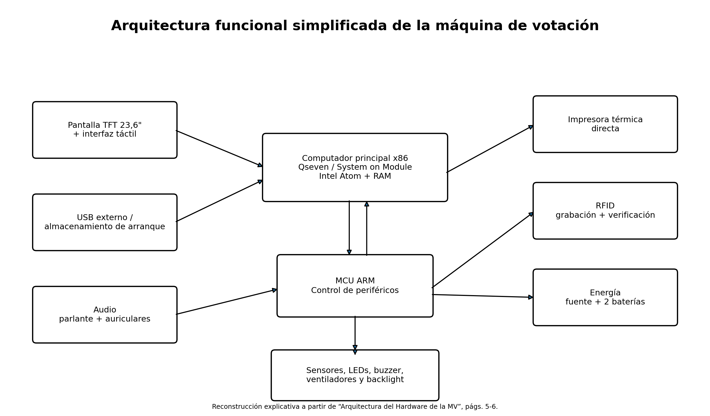
1. Alcance, fuentes y método de lectura
La documentación disponible corresponde a distintas etapas y finalidades: memoria técnica del sistema, arquitectura de hardware, anexos sobre boletines y credenciales, documentación de contexto de ejecución, inventario de software comunicado en 2026, análisis de vulnerabilidades y respuestas entregadas durante la auditoría de hardware y software de febrero de 2026.
Para evitar mezclar afirmaciones de documentos de distinta fecha, el documento utiliza tres niveles: (a) transcripción documental; (b) explicación técnica derivada de esas fuentes; y (c) observaciones sobre inconsistencias o datos que no pueden verificarse con la documentación aportada.
| Código | Documento / fuente | Uso principal en este informe |
|---|---|---|
| [S1] | Arquitectura del Hardware de la MV, Anexo 1; Anexo 7 sobre boletines, actas y credenciales. | Gabinete, placa, x86, MCU, pantalla, impresora, RFID, energía e insumos. |
| [S2] | Memoria Técnica Descriptiva — Sistema de Boleta Única Electrónica (BUE). | Operación, software, módulos, votación, escrutinio, seguridad y relación funcional. |
| [S3] | Contextos de ejecución y esquema de usuarios. | Cadena de arranque, kernel/initramfs, systemd, usuarios y permisos. |
| [S4] | Inventario de software de las máquinas de votación. Nota S.G. N.º 306/2026. | Versiones P6-7k, P6-8k, VP6D, SO, firmware, bootloader, BIOS y librerías. |
| [S5] | Problemas de seguridad conocidos en los componentes de software. | Análisis CVE, limitaciones y discrepancias de versiones. |
| [S6] | Respuestas a peticiones — Auditoría, 5/02/2026. | USB, Ethernet, baterías, RFID, audio, sensor de presencia, pantalla y componentes. |
| [S7] | Respuesta Día 3 — segunda parte, 9/02/2026. | Paquetes del SO, NIST citado, repositorios y librerías propias/externas. |
| [S8] | Respuesta Día 3 parte 3. | Disponibilidad de código fuente, ARMVE, bootloader y documentación del firmware. |
| [S9] | Respuesta Día 4 parte 1, 10/02/2026. | Cuatro interfaces USB y disponibilidad del código fuente de BIOS. |
2. Qué es el equipo y qué funciones integra
El objeto de este documento es describir la Arquitectura de Hardware del equipo de votación ofrecido, incluyendo todas sus características y componentes.
El sistema proporciona una plataforma que permite:
• Efectuar la selección de candidatos por parte del usuario.
• Imprimir dicha selección en un formato físico de papel.
• Proporcionar un soporte digital al formato físico.
• Agilizar el proceso de recuento de votos.
La plataforma combina funciones que en una computadora de propósito general normalmente estarían separadas: interfaz de usuario, cómputo, impresión, lectura y escritura RFID, gestión de energía, audio, accesibilidad y generación de documentación electoral.
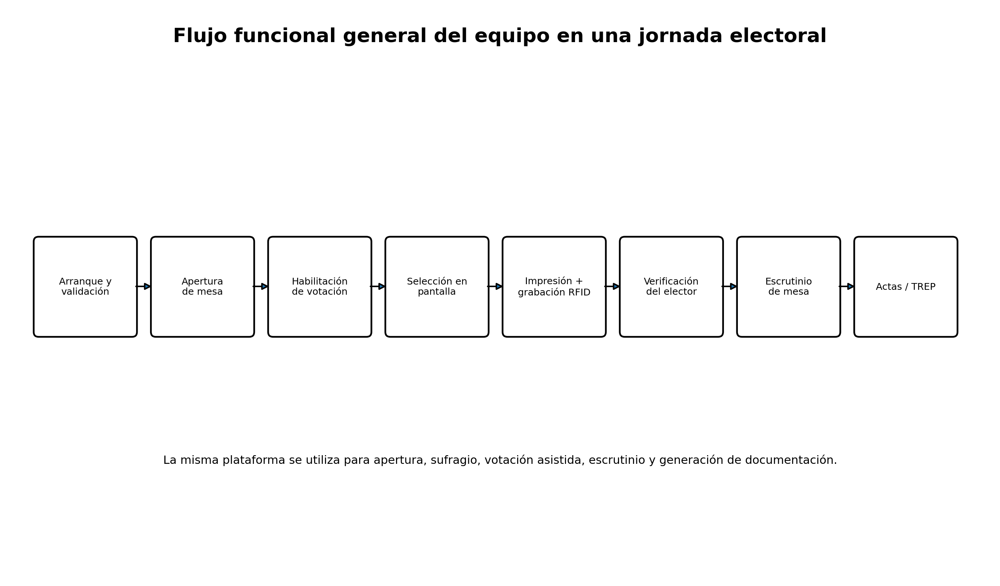
2.1 Características físicas generales
Tiene un formato valija que es fácil de transportar y está autocontenido.
Posee dos bancos de baterías de gran capacidad que le otorgan al equipo una autonomía mínima de doce horas.
No posee conexiones inalámbricas como WIFI, Bluetooth, etc.
No posee ningún tipo de disco de almacenamiento que permita guardar información relativa al elector o a su elección.
La impresora por ser del tipo de impresión térmica no requiere de cambio de insumos para su funcionamiento.
| Característica | Dato documentado |
|---|---|
| Peso del equipo cerrado | 14 kg. |
| Dimensiones del gabinete | 65 × 48 × 17 cm. |
| Forma de transporte | Gabinete tipo valija, autocontenido. |
| Autonomía | Mínimo 12 horas mediante dos bancos de baterías. |
| Conectividad inalámbrica | La arquitectura declara que no posee Wi-Fi ni Bluetooth. |
| Almacenamiento local permanente | La arquitectura declara que no posee medio de almacenamiento permanente accesible. |
| Privacidad física | Solapas de privacidad removibles y máscara/acrílico para modalidad asistida. |
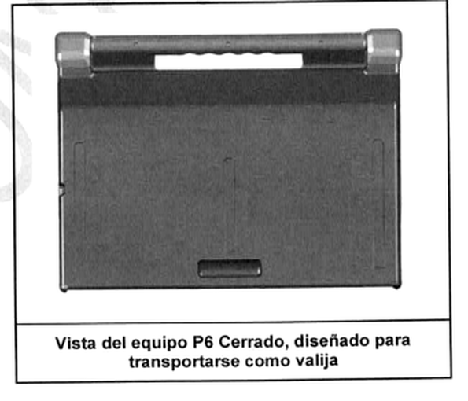
3. Versiones de fabricación: P6-7k, P6-8k y VP6D
La Nota S.G. N.º 306/2026 identifica tres versiones de fabricación relevadas: P6-7k, P6-8k y VP6D. Las diferencias documentadas de forma explícita se concentran en firmware del MCU, bootloader y BIOS. La documentación aportada no asigna de manera completa y separada todas las características físicas —pantalla, impresora, RFID, baterías y demás— a cada una de las tres versiones.
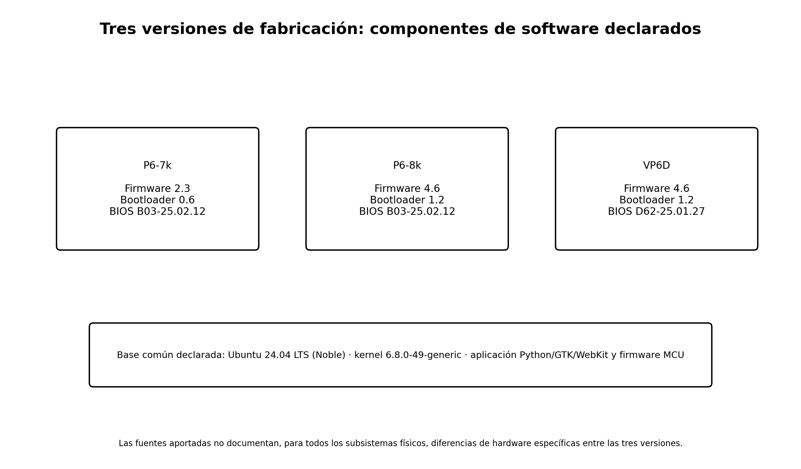
| Versión | Firmware MCU | Bootloader MCU | BIOS | Observación documental |
|---|---|---|---|---|
| P6-7k | 2.3 | 0.6 | B03-25.02.12 | Incluye en la lista de firmware NXP LPC15xx/43xx y CIAA, además de FreeRTOS, TinyCrypt, RFID NXP y CMSIS. |
| P6-8k | 4.6 | 1.2 | B03-25.02.12 | Comparte firmware/bootloader declarados con VP6D; cambia el conjunto de bibliotecas respecto de P6-7k. |
| VP6D | 4.6 | 1.2 | D62-25.01.27 | Comparte firmware/bootloader con P6-8k; BIOS distinta según la nota. |
3.1 P6-7k
La versión P6-7k figura con firmware 2.3 y bootloader 0.6. Para ambos se listan FreeRTOS, TinyCrypt, componentes NXP para RFID y microcontroladores LPC15xx/43xx, CMSIS Core y CIAA. La BIOS declarada es B03-25.02.12.
La documentación no permite afirmar, únicamente con las fuentes aportadas, que pantalla, impresora, baterías o gabinete sean exclusivos o diferentes en P6-7k. Por ello, esos subsistemas se describen más adelante como parte de la arquitectura común documentada.
3.2 P6-8k
La versión P6-8k figura con firmware 4.6 y bootloader 1.2. El firmware incluye FreeRTOS, TinyCrypt, NXP USB Library, CMSIS Core y NXP RFID Library. El bootloader incluye FreeRTOS, TinyCrypt, NXP USB Library y CMSIS Core. La BIOS declarada es B03-25.02.12.
En comparación con P6-7k, la lista de componentes de firmware reportada cambia: se incorpora NXP USB Library y se declara CMSIS Core bajo Apache 2.0; la nota no lista CIAA ni NXP LPC15xx/43xx para P6-8k.
3.3 VP6D
La versión VP6D figura con el mismo firmware 4.6 y bootloader 1.2 declarados para P6-8k. La diferencia explícita en la tabla de BIOS es D62-25.01.27.
La documentación aportada no identifica otras diferencias físicas de VP6D respecto de P6-8k. No corresponde, por tanto, atribuirle cambios de hardware que no estén expresamente documentados.
4. Arquitectura de hardware
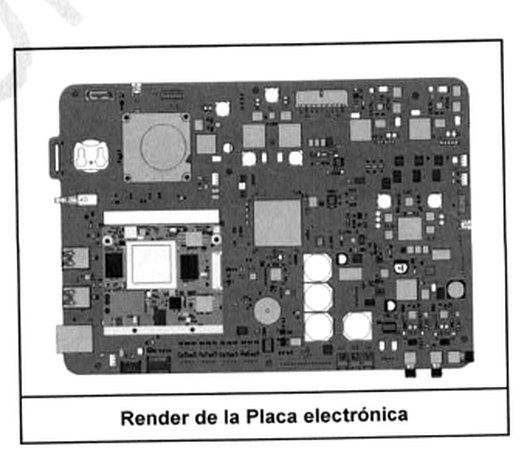
Las placas electrónicas de los equipos, han sido diseñadas específicamente para su aplicación por el área de ingeniería de la empresa. Se trata de un PCB multicapa, construido con un material IT-180A.
[Deduced] La placa actúa como carrier board o placa portadora: conecta el módulo de cómputo x86, el MCU y la electrónica dedicada a impresión, RFID, energía, audio y otros periféricos. Esta integración es una diferencia importante frente a una PC convencional, donde esos elementos suelen ser módulos comerciales separados.
4.1 Computador principal x86: Qseven / System on Module
La unidad de procesamiento x86 está compuesta por un SOM Q7 (System on Module, factor de forma Q7); Este módulo cuenta con todos los componentes necesarios para el funcionamiento de un entorno similar al de una PC convencional, de donde se extraen las señales de video (display), USB (touchscreen y puertos de expansión), ethernet (puerto de expansión), y audio (conexión con el parlante), las cuales son controladas por el CPU.
| Elemento | Especificación documentada |
|---|---|
| CPU | Intel Atom; 4 núcleos, 4 hilos; frecuencia base de operación 1,60 GHz. |
| RAM | 2/8 GB; memoria soldada, no removible. |
| Conexión del SOM | Conector de 230 pines; disipador pasivo. |
| Video | Conexión LVDS al panel interno. |
| Audio | Salida a parlante interno con amplificador y miniplug para auriculares externos. |
| Puertos externos | 2 USB externos y 1 Ethernet externo, según el documento de arquitectura. |
| Almacenamiento permanente | No posee medio de almacenamiento permanente según el documento de arquitectura. |
| Arranque | BIOS con arranque seguro. |
4.2 Microcontrolador ARM y control de periféricos
El documento de arquitectura indica que los MCU utilizados corresponden a las familias NXP LPC43xx o LPC546xx. En las respuestas de auditoría se menciona específicamente la entrega del datasheet del MCU LPC54607J256.
La placa dispone de un chip de memoria RAM que permite otorgarle al MCU mayor cantidad de memoria volátil para que este sea capaz de realizar la función de impresión de imágenes. Esta memoria está basada en el IC IS42S16800F-7TLI y posee 128Mbit de capacidad.
| Función del MCU | Elementos relacionados |
|---|---|
| Impresión | Motor, cabezal, sensores de posicionamiento y memoria de impresión. |
| RFID | Front-end, RF switch, antenas de grabación/verificación e interferencia. |
| Energía | Baterías, cargadores, encendido/apagado, SMBus. |
| Señalización | LEDs, buzzer y control de backlight. |
| Ambiente / presencia | Sensor PIR y ventiladores. |
| Comunicación con x86 | Protocolo ARMVE sobre interfaz interna USB. |
4.3 Pantalla e interfaz táctil
La respuesta técnica de auditoría identifica como módulo principal de pantalla el M236HJJ-L31: TFT de 23,6 pulgadas, retroiluminación LED blanca, interfaz LVDS de 30 pines en dos canales, resolución nativa 1920×1080 y capacidad declarada de hasta 16,7 millones de colores.
El documento de arquitectura describe el touchscreen como un panel de tecnología infrarroja multitouch: una matriz de emisores infrarrojos y fotodetectores alrededor del borde detecta interrupciones en los haces. La respuesta técnica posterior agrega que existe un controlador dedicado para detectar y procesar las entradas táctiles.
| Elemento | Dato |
|---|---|
| Panel | M236HJJ-L31. |
| Tecnología | TFT LCD con retroiluminación LED blanca. |
| Tamaño | 23,6 pulgadas. |
| Resolución | 1920 × 1080 píxeles. |
| Interfaz | LVDS, 30 pines, 2 canales. |
| Color | Hasta 16,7 millones de colores. |
| Touch | Tecnología infrarroja multitouch según la arquitectura de hardware. |
Referencia documental: [S1] Arquitectura del Hardware de la MV, págs. 12-14; [S6] respuesta técnica, p. 8.
4.4 Puertos USB, Ethernet y control físico de interfaces
El hardware utiliza cuatro interfaces USB:
Puertos Externos: 2 Interfaces compatible con 3.0 las cuales contienen IC para el apagado de dichos puertos entre el conector y el CPU.
TouchScreen: 1 Interface 2.0 conectado directamente al CPU
ARMVE: 1 Interface 2.0 para la comunicación del MCU con el CPU para la gestión de los periféricos de hardware.
La respuesta de auditoría identifica los circuitos TS3USB221E y FUSB340TMX para corte/conmutación de líneas de datos USB 2.0/3.0 y el TPS2561 para el corte de VBUS. La documentación de arquitectura también señala que los puertos USB externos y Ethernet se encuentran deshabilitados durante la funcionalidad de voto y pueden utilizarse en contextos específicos de servicio o transmisión.
| Interfaz | Uso documentado |
|---|---|
| USB externos (2) | Compatibles con USB 3.0; habilitación controlada. |
| USB 2.0 interno | Touchscreen conectado al CPU. |
| USB 2.0 interno ARMVE | Comunicación MCU ↔ CPU para gestión de periféricos. |
| Ethernet externo | Documentado como deshabilitado durante voto; previsto para comunicación en modalidad de transmisión de resultados. |
4.5 Audio y accesibilidad
La arquitectura describe dos salidas de audio: un parlante interno y una salida tipo jack para auriculares. La respuesta técnica de auditoría identifica el códec HD Audio ALC888S y señala detección automática de la conexión de auriculares para redirigir el sonido.
Para la modalidad asistida, la documentación describe auriculares y una máscara de acrílico con perforaciones, además de una interfaz audible y un teclado numérico/proyección para personas con discapacidad visual.
| Componente | Dato documentado |
|---|---|
| Códec de audio | ALC888S (respuesta de auditoría). |
| Conector de placa | S4B-PH-K-S(LF)(SN), según respuesta. |
| Jack periférico | CUI SJ-3506-SMT, según respuesta. |
| Salidas | Parlante interno + auriculares externos. |
| Uso electoral | Votación asistida y realimentación audible. |
4.6 Sensor de presencia, indicadores, buzzer y ventilación
La documentación describe un sensor infrarrojo de presencia para detectar si una persona se encuentra frente a la máquina y permitir apagar la retroiluminación cuando no está en uso. La respuesta de auditoría identifica el módulo PIR PYD1098 y señala que su monitoreo es gestionado por una tarea basada en interrupciones GPIO.
El sistema integra indicadores luminosos RGB, buzzer piezoeléctrico y dos ventiladores internos controlados por el MCU. Estos elementos proporcionan señalización visual/sonora y control térmico del equipo.
5. Sistema de impresión
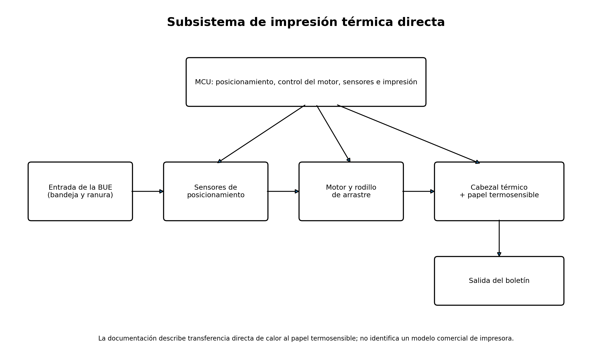
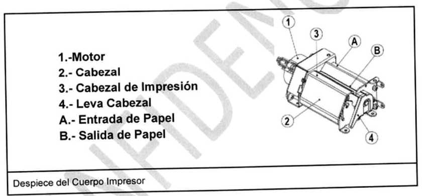
El cuerpo de impresión posee es de tecnología térmica de transferencia directa, la impresión se realiza por transferencia de calor al papel termosensible de las boletas. Esta tecnología no requiere de recambio de repuestos de tinta, ni otro tipo de insumo, lo que le otorga la flexibilidad, confiabilidad y seguridad requerida para el tipo de uso para el que ha sido diseñado.
[Deduced] En terminología de impresión, la descripción corresponde a impresión térmica directa: el cabezal calienta selectivamente el papel termosensible. No aparece documentado un ribbon, cartucho, tóner o tinta como consumible del mecanismo.
| Elemento del impresor | Descripción documentada |
|---|---|
| Control | MCU y etapa de control; acciona sensores, motor y datos hacia el cabezal. |
| Posicionamiento | Sensores detectan inserción y ranura; el motor ubica la boleta en posición de impresión. |
| Arrastre | Motor de alto torque y rodillo de caucho de silicona. |
| Cabezal | Cabezal térmico para impresión sobre papel termosensible. |
| Sensores | Sensores de entrada/salida y sensor de ranura. |
| Resolución | El documento menciona impresión a 203 dpi. |
| Estructura | Cuerpo de aleación de aluminio. |
6. RFID: registro, lectura y verificación
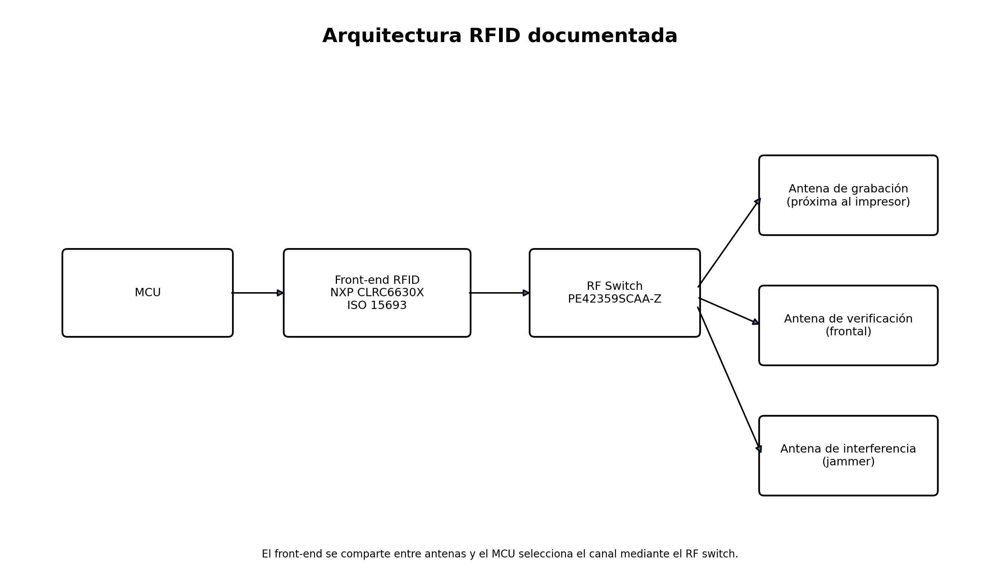
La respuesta técnica identifica un front-end RFID basado en el IC NXP CLRC6630X y el protocolo ISO 15693. Un RF switch PE42359SCAA-Z permite conmutar la salida de radiofrecuencia entre antenas según el estado del sistema.
La arquitectura describe una antena de grabación cercana al cuerpo impresor, una antena de verificación en el frente del equipo y un sistema de interferencia o “jammer” destinado a reducir lecturas no deseadas fuera de la zona de uso prevista.
| Subsistema | Función |
|---|---|
| Antena de grabación | Graba el chip incorporado en el boletín; trabaja a pocos centímetros. |
| Antena de verificación | Permite al elector acercar el boletín y verificar el contenido electrónico. |
| Front-end | NXP CLRC6630X; gestiona la comunicación ISO 15693. |
| RF switch | PE42359SCAA-Z; selecciona la antena activa. |
| Jammer | Genera interferencia para dificultar lecturas fuera del alcance requerido, según la arquitectura. |
6.1 Chips RFID documentados en boletines y actas
| Chip / inlay | Datos documentados |
|---|---|
| NXP ICODE SLIX2 | Frecuencia 13,56 MHz; memoria 2.560 bit; transferencia hasta 53 kbit/s según el anexo; CRC de 16 bit; retención declarada de 50 años; lock command. |
| ST25TV02KC | ISO 15693; memoria de usuario 2.560 bit; transferencia hasta 26 kbit/s; CRC de 16 bit; retención declarada de 60 años; lock command. |
El Anexo 7 especifica inlays con NXP ICODE SLIX2 o ST25TV02KC para voto, capacitación y actas. La frecuencia de operación indicada es 13,56 MHz.
Referencia documental: [S1] Anexo 7, págs. 29-31.
7. Energía, baterías y alimentación
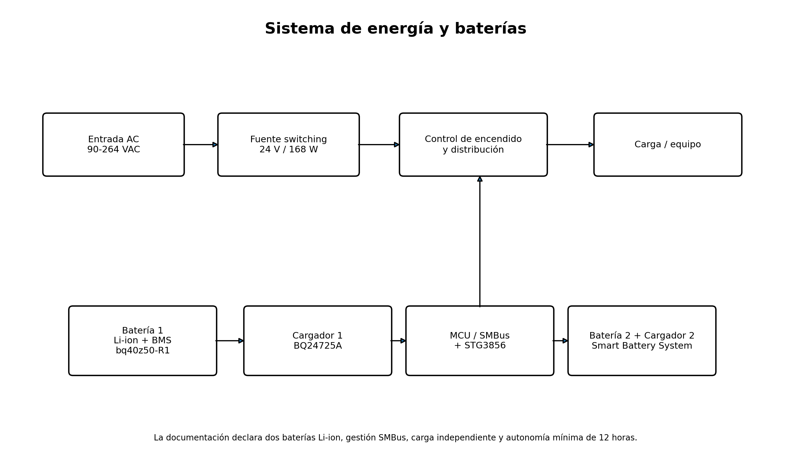
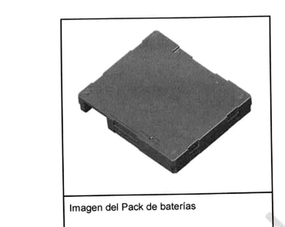
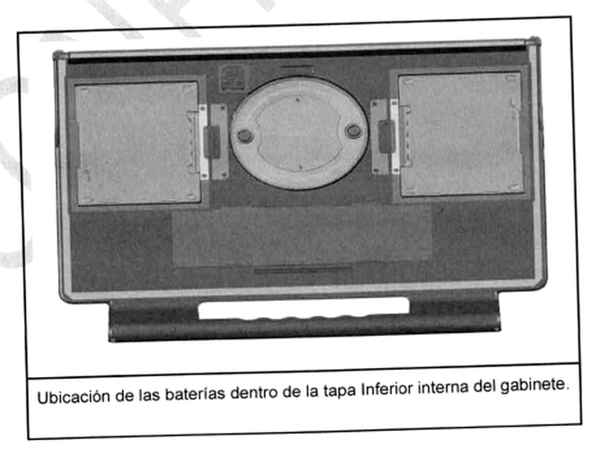
| Elemento | Especificación / función |
|---|---|
| Fuente de entrada | AC 90-264 VAC, 50/60 Hz, según la arquitectura. |
| Fuente del equipo | 24 VDC; 168 W según la documentación. |
| Baterías | Dos packs Li-ion; autonomía mínima declarada de 12 horas. |
| Gestión de batería | Smart Battery System / SMBus. |
| BMS | bq40z50-R1, identificado en respuesta de auditoría. |
| Cargadores | BQ24725A independientes para cada batería. |
| Conmutación SMBus | STG3856, identificado en respuesta de auditoría. |
| Reemplazo | La documentación describe posibilidad de reemplazo en campo / hot-swap. |
La arquitectura señala que cada batería posee lógica interna de control y que el MCU puede obtener estado de carga, temperatura y otros parámetros mediante el bus de comunicación.
8. Insumos y elementos necesarios para la operación
Conviene distinguir consumibles físicos de elementos operativos. La impresora no utiliza tinta o tóner; el consumible principal es el soporte documental termosensible con chip RFID. El medio USB, las credenciales, las baterías y los accesorios de accesibilidad son necesarios para determinados momentos del proceso, pero no todos son consumibles de un solo uso.
8.1 Boleta Única Electrónica (BUE)
Los boletines de voto y capacitación tienen un largo de 302 mm y un ancho de 110 mm, mientras que su espesor como es de aproximadamente 0,25 mm. Estas dimensiones permiten imprimir en texto claro y con caracteres grandes la selección del elector, de manera tal que este último pueda ver claramente como se compone su elección.
| Componente del laminado | Especificación del Anexo 7 |
|---|---|
| Papel obra | Mín. 120 a máx. 140 g/m². |
| Papel termosensible | Máx. 100 a mín. 80 g/m². |
| Papel metálico | Espesor mínimo 0,030 mm; troquelado en etiquetas de 40 × 30 mm, vértices redondeados R=2. |
| Gramaje total del boletín laminado | 220 g/m². |
| Dimensiones del boletín | 302 × 110 mm; espesor aproximado 0,25 mm. |
| Inlay RFID | NXP ICODE SLIX2 o ST25TV02KC, 13,56 MHz. |
El documento indica una muesca en los boletines y actas para posicionamiento dentro de la bandeja y como guía táctil para personas con discapacidad visual. Para boletines de voto y capacitación se agrega además un rectángulo de film metálico destinado a bloquear la lectura del chip cuando el boletín se dobla por el centro.
8.2 Actas, certificados y credenciales
El Anexo 7 indica que las actas tienen 350 mm de largo, 110 mm de ancho y el mismo espesor que los boletines de voto y capacitación. Distingue actas con chip —TREP de capacitación, TREP de simulacro y certificados de resultados TREP— y actas sin chip, como actas/certificados de capacitación.
Las credenciales son utilizadas para habilitar módulos y funciones de la máquina. La Memoria Técnica Descriptiva explica que cada credencial posee chip RFID y que, según el tipo, habilita el módulo correspondiente.
8.3 Medio USB de arranque / datos
El DA USB se compone de un Pendrive USB 3.0 8Gb estándar de mercado. Los archivos en su interior realizan validaciones de integridad al momento de ser colocados y durante el proceso de volcado a la Ram de equipo. No se utiliza un sistema de “bloqueo”, sino que contiene firmas de autenticación las cuales son validadas por la BIOS previo a la carga de los archivos del Pendrive.
[Deduced] El pendrive es, por tanto, parte del proceso de arranque/carga de software y datos de elección. La documentación más reciente describe que el contenido se copia a RAM y se valida criptográficamente antes de ejecutar el sistema.
8.4 Energía y accesorios
- Conexión eléctrica AC dentro del rango documentado, con fuente interna/adaptador a 24 VDC.
- Dos packs de baterías Li-ion instalados en el gabinete.
- Auriculares para modalidad asistida cuando corresponda.
- Máscara o plantilla acrílica de accesibilidad para personas con discapacidad visual, según la documentación.
- Boletines, actas, certificados y credenciales RFID específicos del proceso electoral.
9. Arquitectura de software
El inventario de 2026 declara Ubuntu 24.04 LTS (Noble) como base, kernel Linux 6.8.0-49-generic y GNU Arm Embedded Toolchain 10.3-2021.10 para firmware/bootloader. La Memoria Técnica Descriptiva describe una aplicación mayormente escrita en Python, con componentes de interfaz en JavaScript, HTML5 y CSS.
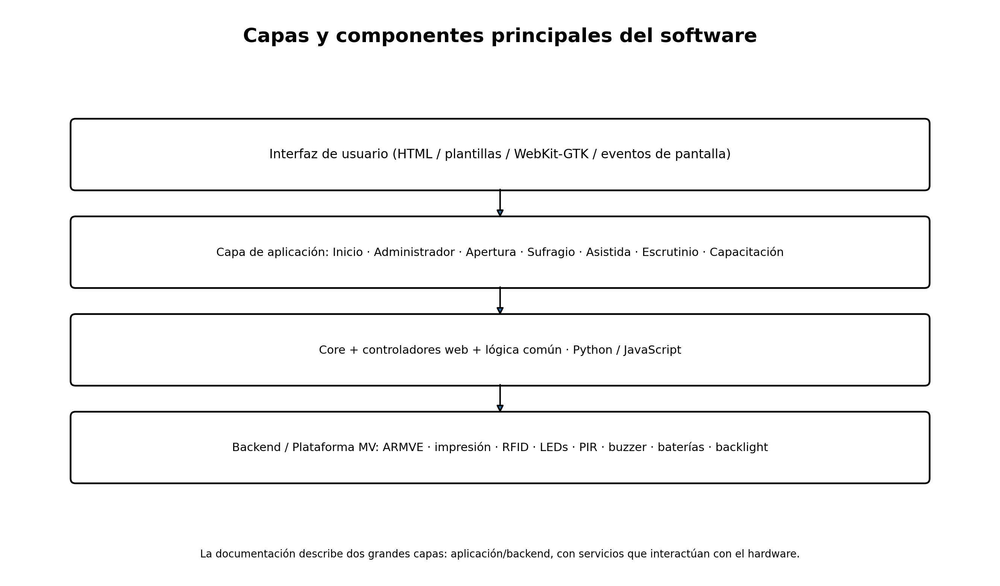
El software que corre en la máquina de voto se divide en 2 grandes capas: Aplicación y Backend, conectados por un bus de pasaje de mensajes. El Backend expone servicios al bus y desde la Aplicación se consumen.
9.1 Capa de backend y plataforma de máquina de voto
La Memoria Técnica define la capa de Backend como la que interactúa directamente con el hardware. La plataforma incorpora impresión, RFID, LEDs, PIR, buzzer, ventiladores, baterías y backlight. Las respuestas de 2026 identifican el protocolo propio ARMVE como canal de comunicación entre MCU y Qseven/x86.
9.2 Core, módulos de aplicación, controladores e interfaz
| Componente | Función descrita |
|---|---|
| Core | Agrupa elementos comunes; generación de imágenes de actas/certificados/votos, obtención/procesamiento de datos, serialización y lectura RFID. |
| Inicio | Aplicación inicial; permite desbloquear la máquina e ingresar al menú Administrador. |
| Administrador | Menú principal; configuración y visualización de datos de la máquina. |
| Apertura | Generación de Actas de Apertura y configuración del lugar/mesa. |
| Sufragio | Selección de candidatos e impresión del sufragio. |
| Asistida | Facilita sufragio de personas con discapacidad visual. |
| Escrutinio | Escrutinio de mesa e impresión de Acta de Cierre, Transmisión de Resultados y Certificados. |
| Capacitación | Equivalente funcional de voto, sin imprimir ni almacenar en chip los votos. |
| Controlador de Hardware | Interacción con sensores, impresora, RFID y estados de máquina. |
| Controlador Web | Interacción entre módulos de aplicación e interfaz de usuario. |
| Interfaz de Usuario | Aplicación JavaScript que recibe/procesa datos y genera HTML renderizado en WebKit-GTK. |
Referencia documental: [S2] Memoria Técnica Descriptiva, págs. 20-24.
10. Arranque, memoria y contexto de ejecución
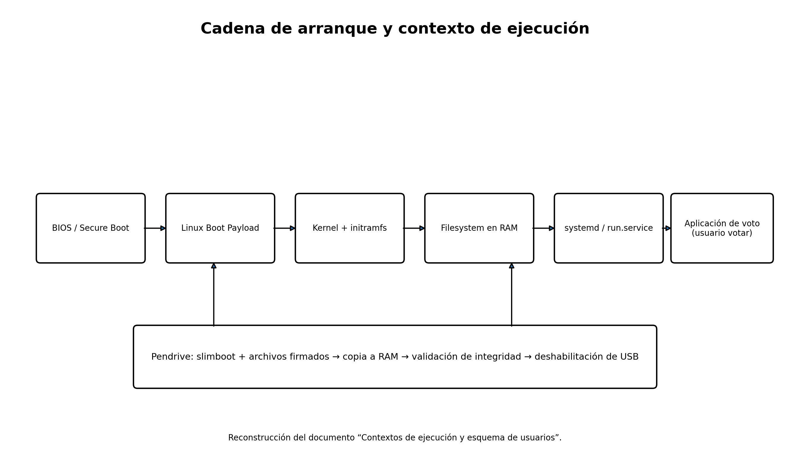
Linux Boot Payload
• Inicializa los dispositivos
• No hay usuarios, se ejecuta todo en modo privilegiado
• Este Payload ya se encuentra en la máquina de votación al momento que se enciende (BIOS).
• Tiene un bucle principal que contiene la siguiente lógica: habilita los puertos USB; espera por un pendrive; cuando lo encuentra, copia el contenido del directorio slimboot a RAM; des-habilita los puertos USB; valida la integridad de los archivos del directorio slimboot.
El documento continúa con el kernel e initramfs: se copian a RAM los archivos restantes, se cierran los puertos USB, se realiza una validación de integridad —incluyendo referencia a sha512sum.txt—, se monta el filesystem y se ejecuta systemd como PID 1.
Una vez iniciado systemd, el servicio run.service ejecuta el software de votación usando el usuario “votar”. El documento muestra que el usuario de aplicación no posee permisos generales de sudo sin contraseña; se documenta una excepción específica para reiniciar un servicio.
10.1 Usuarios, autenticación y permisos
La documentación de contexto muestra /etc/passwd, /etc/group, /etc/shadow y /etc/sudoers. Explica que las cuentas no poseen un hash de contraseña válido para login interactivo y que la seguridad primaria se basa en la integridad del dispositivo y la cadena de arranque, no en autenticación interactiva por contraseña.
La respuesta del Día 3 agrega que los directorios de usuarios no se utilizan como usuarios activos y que la aplicación se encuentra en /cdrom/app. También cita lineamientos NIST para justificar el modelo de autenticación y controles compensatorios del sistema cerrado.
11. Inventario de software declarado en 2026
| Componente | Versión | Notas |
|---|---|---|
| Ubuntu | 24.04 LTS (Noble) | Distribución mínima y personalizada. |
| Kernel Linux | 6.8.0-49-generic | Repositorios oficiales de Ubuntu. |
| GNU Arm Embedded Toolchain | 10.3-2021.10 | Entorno de compilación de firmware/bootloader. |
| Librería Python | Versión | Uso según la nota |
|---|---|---|
| cryptography | 41.0.7 | AES-GCM, PBKDF2, firmas ECDSA, hashing SHA256. |
| construct | 2.10.70 | Parseo de estructuras binarias: ARMVE, RFID y documentos. |
| ujson | 5.9.0 | Serialización JSON de alta performance; IPC y escrutinio. |
| PyYAML | 6.0.1 | Lectura de configuración YAML. |
| pyudev | 0.24.1 | Monitoreo de dispositivos USB internos. |
| pyserial | 3.5 | Comunicación por puerto serie / servicio ARMVE. |
| sensors (PySensors) | 1.0 | Monitoreo de temperatura vía lm_sensors. |
| pyalsaaudio | 0.10.0 | Reproducción/mixer de audio vía ALSA. |
| pygame | 2.6.1 | Reproducción de audios en módulo asistida. |
| Pillow | 10.4.0 | Manipulación de imágenes y generación de QR. |
| Jinja2 | 3.1.4 | Renderizado de plantillas SVG. |
| PyGObject | 3.48.2 | Bindings GTK+/GLib y renderizado SVG vía Rsvg. |
| pycairo | 1.25.1 | Renderizado 2D y conversión SVG → PNG. |
Referencia documental: [S4] Nota S.G. N.º 306/2026. La propia nota no consigna licencia de estas librerías; el inventario aportado añade licencias habituales como referencia del proyecto de origen.
11.1 Librerías propias y discrepancias entre documentos
La respuesta técnica del Día 3 lista como propias Zaguan 3.2.2 y Ojota 3.3.1, y como externas, entre otras, construct 2.10.70, cryptography 41.0.7, elaphe3 0.2.0, Jinja2 3.1.4, Pillow 10.4.0, pyalsaaudio 0.10.0, pyserial 3.5, python3-keybinder 1.1.2, pyudev 0.24.1, pyusb 1.0.2, PyYAML 6.0.3, sensors.py 1.0, ujson 5.9.0 y MarkupSafe 2.1.2.
Esto genera diferencias frente a la Nota S.G. N.º 306/2026, donde PyYAML figura 6.0.1 y pygame 2.6.1. El análisis de seguridad aportado recomienda reconciliar las versiones verificando contra los equipos.
| Librería | Nota SG 306/2026 | Informe / respuesta de auditoría | Observación |
|---|---|---|---|
| PyYAML | 6.0.1 | 6.0.3 | Versiones distintas. |
| pygame | 2.6.1 | 2.5.2 | El análisis de seguridad pide verificar cuál corre en el equipo. |
| elaphe3 | No listada | 0.2.0 | Adicional en auditoría. |
| python3-keybinder | No listada | 1.1.2 | Adicional en auditoría. |
| pyusb | No listada | 1.0.2 | Adicional en auditoría. |
| MarkupSafe | No listada | 2.1.2 | Dependencia adicional. |
| Zaguan / Ojota | No listadas | 3.2.2 / 3.3.1 | Librerías propias de MSA. |
12. Código fuente, auditabilidad y cadena de confianza
El código fuente del firmware se encuentra disponible en las computadoras de laboratorio.
Los comandos denominados propios son los que componen el protocolo llamado ARMVE el cual es utilizado para la comunicación con el QSeven. Para su revisión los archivos fuente que contiene los mencionados comandos comienzan con el prefijo “armve_”. Los mismos se encuentran disponibles en las computadoras del laboratorio.
La misma respuesta indica que el bootloader implementa una estrategia de protección multinivel con ECRP, fusibles OTP y checksum de tabla de vectores NXP verificado por boot ROM. También señala que el detalle de posicionamiento del bootloader y firmware se encuentra en linker scripts .ld disponibles en las máquinas del laboratorio.
La respuesta del Día 4 indica que “el código fuente de la BIOS se encuentra disponible en las máquinas de laboratorio”. Por otra parte, el inventario de 2026 señala que módulos propios de la aplicación —sufragio, escrutinio, apertura, subsistema criptográfico, protocolo ARMVE, etc.— fueron declarados propiedad intelectual de MSA y sólo revisables en el laboratorio del TSJE.
13. Seguridad: diseño documentado y vulnerabilidades conocidas
El diseño documenta controles de arranque e integridad, aislamiento operativo, deshabilitación de interfaces y ejecución desde RAM. Separadamente, el análisis de vulnerabilidades aportado revisó las versiones declaradas contra bases públicas de CVE.
Este análisis se basa en información pública y no fue verificado contra los equipos reales. La explotabilidad efectiva depende del contexto: la máquina opera aislada (sin red, con puertos USB desactivados en ejecución y sistema de archivos inmutable en RAM), lo que reduce la superficie de ataque remoto de muchas de estas vulnerabilidades, aunque no elimina los vectores locales/físicos ni la relevancia de mantener componentes actualizados.
| Componente | Versión | Hallazgo principal del análisis aportado | Nivel |
|---|---|---|---|
| Kernel Linux | 6.8.0-49-generic | Versión congelada; actualizaciones de seguridad posteriores no incorporadas en esa compilación. | Alta |
| cryptography | 41.0.7 | CVE propias y dependencia OpenSSL según el análisis. | Alta |
| Jinja2 | 3.1.4 | CVE de escape de sandbox en versiones indicadas. | Alta |
| Pillow | 10.4.0 | CVE de corrupción de memoria al procesar ciertos formatos maliciosos. | Alta |
| FreeRTOS / TinyCrypt / CMSIS | Versión exacta no divulgada | No puede determinarse con rigor qué CVE aplican. | Media |
| Otras librerías Python | Varias | Sin CVE conocida para las versiones evaluadas en el análisis. | Baja |
14. Relación entre hardware y operación electoral
La Memoria Técnica Descriptiva integra hardware y software en un flujo único. El elector introduce la BUE, selecciona opciones en la pantalla, confirma, la máquina imprime en texto claro y registra información en el chip RFID. Luego el boletín puede acercarse al verificador para contrastar el contenido electrónico con lo impreso.
En el escrutinio, la misma máquina lee las BUE individualmente, muestra resultados acumulados y genera actas/certificados. La documentación también describe funciones de apertura de mesa, votación asistida, capacitación y transmisión de resultados.
15. Glosario técnico
| Término | Descripción |
|---|---|
| ARM | Familia de arquitecturas de procesadores ampliamente usada en microcontroladores y sistemas embebidos. |
| ARMVE | Nombre del protocolo/servicio propio que la documentación asocia a la comunicación entre MCU y Qseven. |
| BIOS | Software de bajo nivel que inicializa el equipo y participa en la cadena de arranque. |
| BMS | Battery Management System: electrónica de gestión y protección de baterías. |
| BUE | Boleta Única Electrónica: soporte físico de papel con impresión y chip RFID. |
| CPU | Unidad central de procesamiento. |
| Firmware | Software de bajo nivel que corre en el microcontrolador y controla periféricos. |
| Initramfs | Sistema de archivos inicial en RAM usado durante el arranque de Linux. |
| LVDS | Interfaz eléctrica usada para transportar la señal de video al panel. |
| MCU | Microcontroller Unit: microcontrolador dedicado al control de periféricos. |
| Qseven / Q7 | Factor de forma para System on Module. |
| RAM | Memoria volátil; su contenido se pierde al cortar la energía. |
| RFID | Identificación por radiofrecuencia; permite leer/escribir un chip sin contacto eléctrico. |
| SBS | Smart Battery System: estándar de gestión y comunicación de baterías inteligentes. |
| SMBus | Bus de comunicación usado, entre otros, por baterías inteligentes. |
| SOM | System on Module: módulo compacto que integra CPU, memoria y controladores. |
| systemd | Gestor de inicio y servicios utilizado por Linux en la documentación. |
| Touchscreen infrarrojo | Interfaz táctil que detecta interrupciones de haces infrarrojos alrededor de la pantalla. |
| USB | Interfaz de comunicación usada tanto externamente como internamente para touchscreen y ARMVE. |
| x86 | Arquitectura de procesador usada por la unidad principal que ejecuta Linux y la aplicación. |
16. Síntesis final
- La plataforma documentada es un equipo de cómputo embebido y autocontenido, no una impresora aislada.
- La arquitectura combina una unidad x86 Qseven/SOM y un MCU ARM con responsabilidades diferentes.
- El sistema de impresión es térmico directo sobre papel termosensible y no requiere tinta ni tóner como consumible.
- El registro digital se implementa mediante RFID ISO 15693, con antenas específicas de grabación y verificación.
- Las tres versiones P6-7k, P6-8k y VP6D presentan diferencias documentadas en firmware, bootloader y BIOS; las fuentes aportadas no permiten atribuir todas las diferencias físicas a una versión concreta.
- La base de software declarada en 2026 es Ubuntu 24.04 LTS con kernel 6.8.0-49-generic y una aplicación compuesta por backend, servicios de hardware, controladores y módulos electorales.
- Los insumos físicos principales son la BUE/actas de papel termosensible con RFID, credenciales, medio USB de arranque/datos, energía y accesorios de accesibilidad; la impresora integrada no utiliza cartuchos.
- Las consideraciones de seguridad deben distinguir controles de diseño, disponibilidad de código para auditoría y vulnerabilidades públicas de componentes. Los CVE no deben presentarse como explotaciones demostradas del equipo sin validación sobre máquinas reales.
Anexo A. Detalle de firmware y bootloader por versión
| Versión | Tipo | Versión | Bibliotecas declaradas |
|---|---|---|---|
| P6-7k | Firmware | 2.3 | FreeRTOS (MIT); TinyCrypt (BSD-3-Clause); NXP RFID Library (NXP Proprietary); NXP LPC15xx/43xx (NXP Proprietary); CMSIS Core (BSD-3-Clause); CIAA (BSD-3-Clause). |
| P6-7k | Bootloader | 0.6 | FreeRTOS (MIT); TinyCrypt (BSD-3-Clause); NXP LPC15xx/43xx (NXP Proprietary); CMSIS Core (BSD-3-Clause); CIAA (BSD-3-Clause). |
| P6-8k | Firmware | 4.6 | FreeRTOS (MIT); TinyCrypt (BSD-3-Clause); NXP USB Library (BSD-3-Clause); CMSIS Core (Apache 2.0); NXP RFID Library (NXP Proprietary). |
| P6-8k | Bootloader | 1.2 | FreeRTOS (MIT); TinyCrypt (BSD-3-Clause); NXP USB Library (BSD-3-Clause); CMSIS Core (Apache 2.0). |
| VP6D | Firmware | 4.6 | FreeRTOS (MIT); TinyCrypt (BSD-3-Clause); NXP USB Library (BSD-3-Clause); CMSIS Core (Apache 2.0); NXP RFID Library (NXP Proprietary). |
| VP6D | Bootloader | 1.2 | FreeRTOS (MIT); TinyCrypt (BSD-3-Clause); NXP USB Library (BSD-3-Clause); CMSIS Core (Apache 2.0). |
Anexo B. Extractos documentales relevantes
La placa electrónica permite ejecutar el software requerido por la aplicación y se encarga del control de todos los periféricos del equipo. Esta placa no cuenta con ningún tipo de almacenamiento permanente; el software utilizado por la aplicación es cargado dinámicamente por medio de un dispositivo USB y almacenado en memoria dinámica (RAM) durante la operación del equipo.
El sistema consiste en un equipo completo y genérico de cómputo, funcionando como nodo autosuficiente, pero aislado (sin comunicación alguna con otros equipos o redes). Este nodo inicia y ejecuta una distribución estándar de Linux (Ubuntu GNU/Linux) desde un dispositivo removible de sólo lectura formato “Live”.
La aplicación de votación y el sistema operativo se encuentran en el pendrive que se usará para iniciar la máquina, por lo que dicho equipo no requiere de ningún tipo de software residente.
Fuentes documentales
[S1] Grupo MSA. “Arquitectura del Hardware de la MV”, Anexo 1, y “Características y proceso de fabricación de los boletines, actas y credenciales”, Anexo 7.
[S2] COMITIA / Grupo MSA. “Memoria Técnica Descriptiva”. Sistema de Boleta Única Electrónica (BUE).
[S3] COMITIA. “Contextos de ejecución y esquema de usuarios”.
[S4] “Inventario de software de las máquinas de votación”. Fuente indicada en el documento: Nota S.G. N.º 306/2026, TSJE, 31 de marzo de 2026.
[S5] “Problemas de seguridad conocidos en los componentes de software de las máquinas de votación”. Fecha del análisis indicada: 2 de julio de 2026.
[S6] Justicia Electoral / DTIC y Consorcio Comitia-MSA. Respuestas a peticiones de auditoría, 5 de febrero de 2026.
[S7] Justicia Electoral / DTIC y Consorcio Comitia-MSA. Respuesta Día 3 — segunda parte, 9 de febrero de 2026.
[S8] Justicia Electoral / DTIC y Consorcio Comitia-MSA. Respuesta Día 3 parte 3.
[S9] Justicia Electoral / DTIC y Consorcio Comitia-MSA. Respuesta Día 4 parte 1, 10 de febrero de 2026.